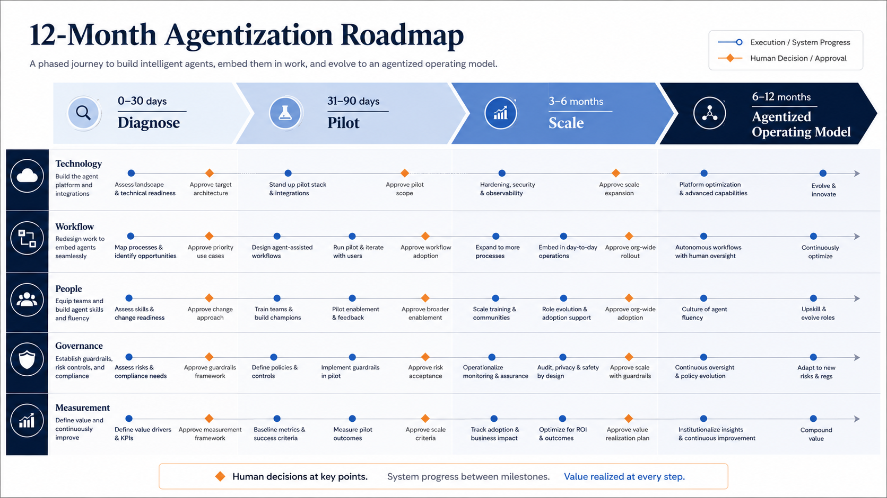
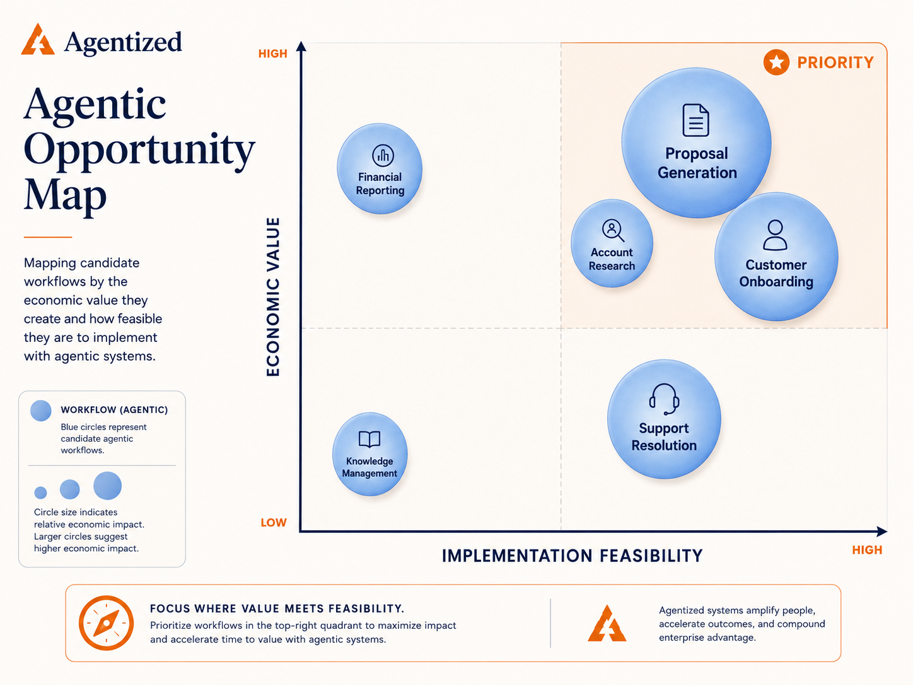
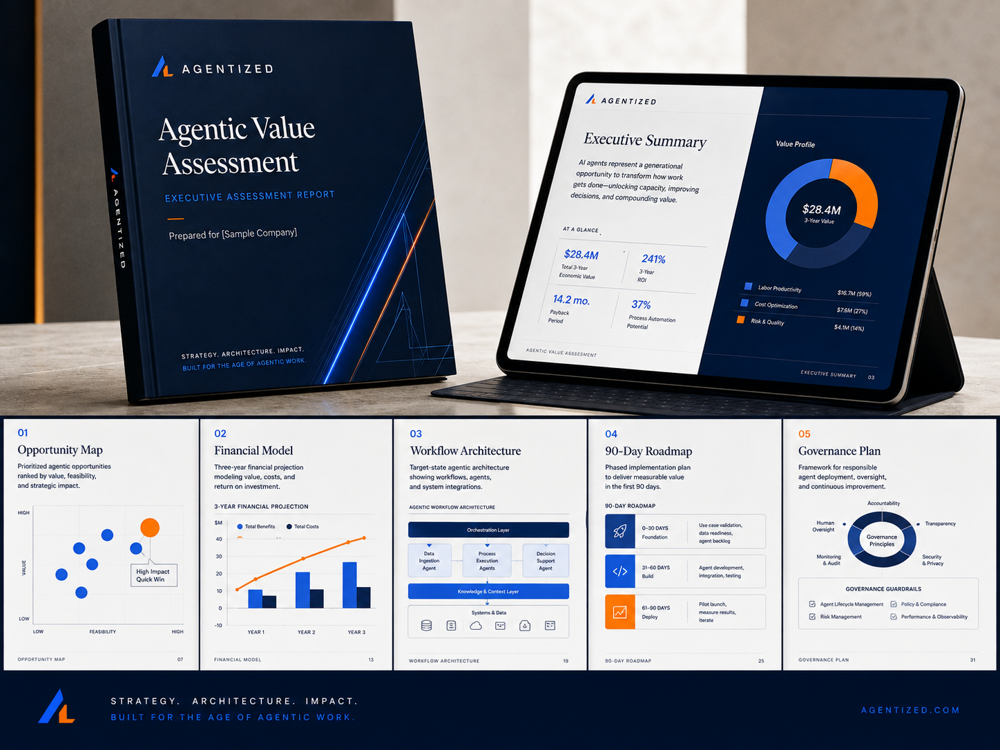

Agentized combines strategy, workflow redesign, implementation, governance and change management to move agentic systems from executive priority to production.
They stall because the company selected a low-value task, preserved a broken workflow, ignored integration, never established a financial baseline, failed to assign an owner or treated governance and adoption as work to complete later.
Agentized designs the operating system around the technology, not the technology in isolation.
A favorable estimate becomes credible only when production results appear in operating measures and financial outcomes.
Map the value chain, systems, data, bottlenecks and economics.
Rebuild the priority workflow around human judgment, agent execution and explicit decision rights.
Build, configure, integrate, evaluate and launch agents in a controlled production environment.
Measure the result against the baseline, including operating and technology costs.
Expand what works and establish the governance and operating model required for continued adoption.

Illustrative roadmap, not client data
Engagements begin with a paid assessment. Each offer leads to the next.
Opportunity map, financial case, architecture, governance and pilot plan.
One to three production workflows with defined business and quality targets.
Multi-function deployment, operating model, governance and scale.
Monitoring, optimization, governance, new workflows and reporting.
Strategic guidance, investment review, governance and roadmap oversight.


Illustrative samples. Prepared for [Sample Company].